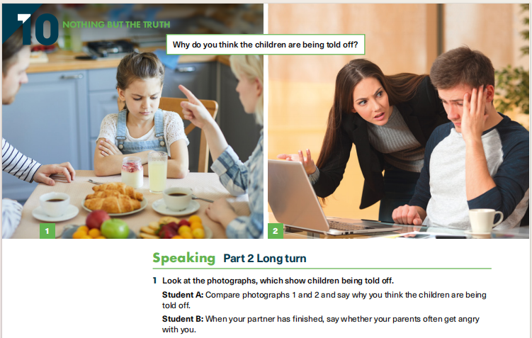

Speaking Part 2 · Long turn
← Speaking
Unit 10 — Children being told off
Nothing but the truth — pair task with two photographs. Student A speaks first; Student B answers a follow-up question.

Speaking Part 2 Long turn
- Look at the photographs, which show children being told off.
- Student A Compare photographs 1 and 2 and say why you think the children are being told off.
- Student B When your partner has finished, say whether your parents often get angry with you.